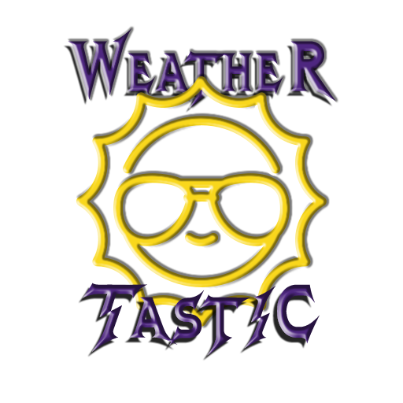

Site Plan
Site Name
Weather-Tastic
Site Purpose
The purpose of my website is to be the primary and reliable source of weather information, who might have an interest or plans of visiting the state.
This website will be more than a place to come when you want to see the weather forecast. Yes, the weather forecast and current weather will be available for viewing, but this site will provide even more!
People rely, and often check the weather in order to make plans, be it going to work, businesses in their decision making, outdoor activities like hiking, farmers in their day to day operations and so forth. This website will also provide other useful information, a gallery and upcoming events in the cities.
Domain
www.weather-tastic.com
The domain 'weather-tastic.com' is available on GoDaddy for $0.01.
Logo
Here's a logo I designed for my website:
